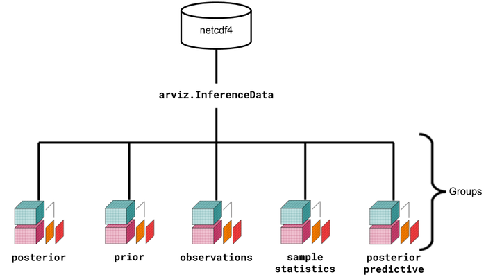

Introduction to xarray, InferenceData, and netCDF for ArviZ¶
While ArviZ supports plotting from familiar data types, such as dictionaries and NumPy arrays, there are a couple of data structures central to ArviZ that are useful to know when using the library.
They are
Why more than one data structure?¶
Bayesian inference generates numerous datasets that represent different aspects of the model. For example, in a single analysis, a Bayesian practitioner could end up with any of the following data.
Prior Distribution for N number of variables
Posterior Distribution for N number of variables
Prior Predictive Distribution
Posterior Predictive Distribution
Trace data for each of the above
Sample statistics for each inference run
Any other array like data source
For more detail, see the InferenceData structure specification here.
Why not Pandas Dataframes or NumPy Arrays?¶
Data from probabilistic programming is naturally high dimensional. To add to the complexity ArviZ must handle the data generated from multiple Bayesian modeling libraries, such as PyMC3 and PyStan. This application is handled by the xarray package quite well. The xarray package lets users manage high dimensional data with human readable dimensions and coordinates quite easily.

Above is a visual representation of the data structures and their relationships. Although it seems more complex at a glance, the ArviZ devs believe that the usage of xarray, InferenceData, and netCDF will simplify the handling, referencing, and serialization of data generated during Bayesian analysis.
An introduction to each¶
To help get familiar with each, ArviZ includes some toy datasets. You can check the different ways to start an InferenceData here. For illustration purposes, here we have shown only one example provided by the library. To start an az.InferenceData, sample can be loaded from disk.
# Load the centered eight schools model
import arviz as az
data = az.load_arviz_data("centered_eight")
data
-
- chain: 4
- draw: 500
- school: 8
- chain(chain)int640 1 2 3
array([0, 1, 2, 3])
- draw(draw)int640 1 2 3 4 5 ... 495 496 497 498 499
array([ 0, 1, 2, ..., 497, 498, 499])
- school(school)object'Choate' ... 'Mt. Hermon'
array(['Choate', 'Deerfield', 'Phillips Andover', 'Phillips Exeter', 'Hotchkiss', 'Lawrenceville', "St. Paul's", 'Mt. Hermon'], dtype=object)
- mu(chain, draw)float64...
array([[-3.476986, -2.455871, -2.826254, ..., 3.392022, 8.46255 , -0.238516], [ 8.250863, 8.250863, 8.250863, ..., 2.527095, 0.276589, 5.655297], [10.51707 , 9.887949, 8.500833, ..., -1.571177, -4.435385, 9.762948], [ 4.532296, 4.532296, 3.914097, ..., 4.597058, 5.898506, 0.161389]]) - theta(chain, draw, school)float64...
array([[[ 1.668654, -8.537401, ..., 0.155234, -6.818251], [-6.239359, 1.071411, ..., -4.462528, -1.110761], ..., [ 9.292977, 13.691033, ..., 8.176874, 5.888367], [11.715418, 4.492172, ..., 12.300712, 9.22107 ]], [[ 8.096212, 7.756517, ..., 6.465884, 5.472468], [ 8.096212, 7.756517, ..., 6.465884, 5.472468], ..., [14.735501, 7.546139, ..., 15.732696, -4.697359], [-4.837035, 8.501408, ..., 5.850945, -0.426543]], [[14.570919, 15.029668, ..., 11.798422, 8.519339], [12.686667, 7.679173, ..., 13.514133, 10.295221], ..., [ 5.361653, 2.78173 , ..., 7.224553, -7.416111], [13.439111, 9.614329, ..., 12.008359, 16.673157]], [[ 4.326388, 5.198464, ..., 5.339654, 3.422931], [ 4.326388, 5.198464, ..., 5.339654, 3.422931], ..., [-1.420946, -4.034405, ..., 15.850648, 4.013397], [-0.050159, 0.063538, ..., 10.592933, 4.523389]]]) - tau(chain, draw)float64...
array([[ 3.730101, 2.075383, 3.702993, ..., 10.107925, 8.079994, 7.728861], [ 1.193334, 1.193334, 1.193334, ..., 13.922048, 8.869919, 4.763175], [ 5.137247, 4.264381, 2.141432, ..., 2.811842, 12.179657, 4.452967], [ 0.50007 , 0.50007 , 0.902267, ..., 8.345631, 7.71079 , 5.406798]])
- created_at :
- 2019-06-21T17:36:34.398087
- inference_library :
- pymc3
- inference_library_version :
- 3.7
xarray.Dataset -
- chain: 4
- draw: 500
- school: 8
- chain(chain)int640 1 2 3
array([0, 1, 2, 3])
- draw(draw)int640 1 2 3 4 5 ... 495 496 497 498 499
array([ 0, 1, 2, ..., 497, 498, 499])
- school(school)object'Choate' ... 'Mt. Hermon'
array(['Choate', 'Deerfield', 'Phillips Andover', 'Phillips Exeter', 'Hotchkiss', 'Lawrenceville', "St. Paul's", 'Mt. Hermon'], dtype=object)
- obs(chain, draw, school)float64...
array([[[ 7.850329e+00, -1.902792e+01, ..., -3.547030e+00, 1.619463e+01], [ 2.931985e+00, 1.919950e-01, ..., -8.065696e-01, 1.518667e+01], ..., [-7.248618e-01, 5.924768e+00, ..., 1.173805e+01, -1.422732e+01], [ 2.220263e+01, 1.548817e+01, ..., 8.783500e+00, 2.019629e+01]], [[-1.202312e+01, 1.233019e+01, ..., 2.131579e+01, 8.356886e+00], [ 4.996825e+00, 1.506829e+01, ..., -1.342830e+00, -2.743757e+01], ..., [ 3.666123e+01, 1.349807e+01, ..., 4.540989e+01, -2.117575e+00], [ 1.791875e+00, 1.501421e+01, ..., -2.182083e+00, -6.630969e+00]], [[ 3.377648e+01, 3.088294e+01, ..., 2.182889e+01, 4.625301e+00], [-5.600531e-01, 5.228436e+00, ..., 9.387947e+00, 3.665830e+00], ..., [ 3.279823e+00, -1.301396e+01, ..., 1.089418e+01, -1.149742e+01], [ 3.424522e+01, 2.320377e+01, ..., 9.892069e+00, 1.729264e+01]], [[-1.517826e-02, -5.597241e-01, ..., -2.986433e+00, 1.075464e+01], [ 7.538687e+00, 2.524281e+01, ..., -8.230382e+00, -2.109873e+01], ..., [ 2.180411e+00, -1.861976e+01, ..., 2.564547e+01, -7.993703e+00], [-2.096968e+01, 5.474909e+00, ..., 4.697547e+00, -1.506955e+01]]])
- created_at :
- 2019-06-21T17:36:34.489022
- inference_library :
- pymc3
- inference_library_version :
- 3.7
xarray.Dataset -
- chain: 4
- draw: 500
- school: 8
- chain(chain)int640 1 2 3
array([0, 1, 2, 3])
- draw(draw)int640 1 2 3 4 5 ... 495 496 497 498 499
array([ 0, 1, 2, ..., 497, 498, 499])
- school(school)object'Choate' ... 'Mt. Hermon'
array(['Choate', 'Deerfield', 'Phillips Andover', 'Phillips Exeter', 'Hotchkiss', 'Lawrenceville', "St. Paul's", 'Mt. Hermon'], dtype=object)
- tune(chain, draw)bool...
array([[ True, False, False, ..., False, False, False], [ True, False, False, ..., False, False, False], [ True, False, False, ..., False, False, False], [ True, False, False, ..., False, False, False]]) - depth(chain, draw)int64...
array([[5, 3, 3, ..., 5, 5, 4], [6, 3, 2, ..., 4, 4, 4], [3, 5, 3, ..., 4, 4, 5], [3, 4, 3, ..., 5, 5, 5]]) - tree_size(chain, draw)float64...
array([[31., 7., 7., ..., 31., 31., 15.], [39., 7., 3., ..., 15., 15., 15.], [ 7., 31., 7., ..., 15., 15., 31.], [ 7., 11., 7., ..., 31., 31., 31.]]) - lp(chain, draw)float64...
array([[-59.048452, -56.192829, -56.739609, ..., -63.171891, -62.871221, -59.67573 ], [-51.16655 , -51.16655 , -51.16655 , ..., -62.242981, -60.962775, -61.120349], [-57.1196 , -54.709673, -49.854318, ..., -58.202845, -63.100613, -61.906641], [-43.11603 , -43.11603 , -44.766386, ..., -60.530643, -63.616474, -58.345072]]) - energy_error(chain, draw)float64...
array([[ 0.073872, -0.184094, 0.301398, ..., -0.024763, 0.015377, 0.011884], [ 0.542861, 0. , 0. , ..., 0.035578, -0.144987, -0.023558], [ 1.30834 , -0.068309, -0.343327, ..., -0.480097, 1.118238, -0.505195], [-0.232345, 0. , 2.427791, ..., -0.007677, -0.087005, -0.003652]]) - step_size_bar(chain, draw)float64...
array([[0.241676, 0.241676, 0.241676, ..., 0.241676, 0.241676, 0.241676], [0.233163, 0.233163, 0.233163, ..., 0.233163, 0.233163, 0.233163], [0.25014 , 0.25014 , 0.25014 , ..., 0.25014 , 0.25014 , 0.25014 ], [0.150248, 0.150248, 0.150248, ..., 0.150248, 0.150248, 0.150248]]) - max_energy_error(chain, draw)float64...
array([[ 1.310060e-01, -2.066764e-01, 6.362023e-01, ..., 1.272182e-01, -3.155631e-01, -6.702092e-02], [ 2.089505e+00, 3.848563e+01, 6.992369e+01, ..., -3.713299e-01, -2.177462e-01, -1.621819e-01], [ 1.458063e+00, 4.335779e+02, 2.788723e+00, ..., -4.800969e-01, 4.380251e+00, -5.051946e-01], [ 3.226553e-01, 2.736452e+02, 2.202908e+02, ..., -1.224747e-01, -1.009818e-01, -1.756579e-01]]) - energy(chain, draw)float64...
array([[60.756731, 62.756232, 64.398717, ..., 67.394493, 66.923554, 65.031815], [53.535435, 56.914649, 54.576739, ..., 63.760659, 64.405753, 66.210544], [62.504616, 61.998659, 56.945798, ..., 64.477622, 68.892486, 67.322436], [50.115409, 46.916088, 52.915592, ..., 66.27361 , 67.768307, 67.209852]]) - mean_tree_accept(chain, draw)float64...
array([[0.950641, 0.990596, 0.725287, ..., 0.971847, 0.979623, 0.986629], [0.78913 , 0.014034, 0.035809, ..., 0.989669, 0.987006, 0.991768], [0.26802 , 0.392567, 0.839235, ..., 0.969229, 0.105422, 0.979116], [0.909964, 0.157585, 0.061793, ..., 0.999467, 0.987537, 0.996704]]) - step_size(chain, draw)float64...
array([[0.127504, 0.127504, 0.127504, ..., 0.127504, 0.127504, 0.127504], [0.12298 , 0.12298 , 0.12298 , ..., 0.12298 , 0.12298 , 0.12298 ], [0.207479, 0.207479, 0.207479, ..., 0.207479, 0.207479, 0.207479], [0.106445, 0.106445, 0.106445, ..., 0.106445, 0.106445, 0.106445]]) - diverging(chain, draw)bool...
array([[False, False, False, ..., False, False, False], [False, False, False, ..., False, False, False], [False, False, False, ..., False, False, False], [False, False, False, ..., False, False, False]]) - log_likelihood(chain, draw, school)float64...
array([[[-5.167744, -4.588952, ..., -4.813702, -4.355802], [-6.232175, -3.46155 , ..., -5.744349, -4.074576], ..., [-4.404661, -3.383463, ..., -3.703993, -3.866952], [-4.216295, -3.283048, ..., -3.383933, -3.821228]], [[-4.507346, -3.22182 , ..., -3.886703, -3.875064], [-4.507346, -3.22182 , ..., -3.886703, -3.875064], ..., [-4.017982, -3.222554, ..., -3.247227, -4.23956 ], [-6.023146, -3.222781, ..., -3.959521, -4.047611]], [[-4.027745, -3.468605, ..., -3.413821, -3.828006], [-4.148096, -3.222038, ..., -3.322139, -3.813795], ..., [-4.765866, -3.357675, ..., -3.802075, -4.391078], [-4.098143, -3.234554, ..., -3.401022, -3.843012]], [[-4.872411, -3.260767, ..., -4.022945, -3.922838], [-4.872411, -3.260767, ..., -4.022945, -3.922838], ..., [-5.550527, -3.945658, ..., -3.244622, -3.907745], [-5.375459, -3.536461, ..., -3.495847, -3.895575]]])
- created_at :
- 2019-06-21T17:36:34.485802
- inference_library :
- pymc3
- inference_library_version :
- 3.7
xarray.Dataset -
- chain: 1
- draw: 500
- school: 8
- chain(chain)int640
array([0])
- draw(draw)int640 1 2 3 4 5 ... 495 496 497 498 499
array([ 0, 1, 2, ..., 497, 498, 499])
- school(school)object'Choate' ... 'Mt. Hermon'
array(['Choate', 'Deerfield', 'Phillips Andover', 'Phillips Exeter', 'Hotchkiss', 'Lawrenceville', "St. Paul's", 'Mt. Hermon'], dtype=object)
- tau(chain, draw)float64...
array([[ 6.560633, 1.016055, 68.91391 , ..., 1.560098, 5.948734, 0.763063]])
- tau_log__(chain, draw)float64...
array([[ 1.881087, 0.015927, 4.232858, ..., 0.444748, 1.783178, -0.270415]])
- mu(chain, draw)float64...
array([[ 5.29345 , 0.813724, 0.712223, ..., -0.979857, -1.657547, -3.272668]])
- theta(chain, draw, school)float64...
array([[[ 2.357357, 7.371371, ..., 6.135082, 3.984435], [ 0.258399, -0.752515, ..., 1.73084 , -0.034163], ..., [-4.353289, 2.194643, ..., -7.819076, -6.21613 ], [-4.131344, -4.093318, ..., -3.775218, -3.555126]]]) - obs(chain, draw, school)float64...
array([[[ -3.539971, 6.769448, ..., 8.26964 , -8.569042], [-21.166369, 1.14605 , ..., -13.157913, -8.5424 ], ..., [ 29.354582, -5.511382, ..., -17.892521, 46.28878 ], [ -6.379747, 6.538907, ..., -21.155214, -6.070767]]])
- created_at :
- 2019-06-21T17:36:34.490387
- inference_library :
- pymc3
- inference_library_version :
- 3.7
xarray.Dataset -
- school: 8
- school(school)object'Choate' ... 'Mt. Hermon'
array(['Choate', 'Deerfield', 'Phillips Andover', 'Phillips Exeter', 'Hotchkiss', 'Lawrenceville', "St. Paul's", 'Mt. Hermon'], dtype=object)
- obs(school)float64...
array([28., 8., -3., 7., -1., 1., 18., 12.])
- created_at :
- 2019-06-21T17:36:34.491909
- inference_library :
- pymc3
- inference_library_version :
- 3.7
xarray.Dataset
In this case the az.InferenceData object contains both a posterior predictive distribution and the observed data, among other datasets. Each group in InferenceData is both an attribute on InferenceData and itself a xarray.Dataset object.
# Get the posterior dataset
posterior = data.posterior
posterior
- chain: 4
- draw: 500
- school: 8
- chain(chain)int640 1 2 3
array([0, 1, 2, 3])
- draw(draw)int640 1 2 3 4 5 ... 495 496 497 498 499
array([ 0, 1, 2, ..., 497, 498, 499])
- school(school)object'Choate' ... 'Mt. Hermon'
array(['Choate', 'Deerfield', 'Phillips Andover', 'Phillips Exeter', 'Hotchkiss', 'Lawrenceville', "St. Paul's", 'Mt. Hermon'], dtype=object)
- mu(chain, draw)float64-3.477 -2.456 ... 5.899 0.1614
array([[-3.476986, -2.455871, -2.826254, ..., 3.392022, 8.46255 , -0.238516], [ 8.250863, 8.250863, 8.250863, ..., 2.527095, 0.276589, 5.655297], [10.51707 , 9.887949, 8.500833, ..., -1.571177, -4.435385, 9.762948], [ 4.532296, 4.532296, 3.914097, ..., 4.597058, 5.898506, 0.161389]]) - theta(chain, draw, school)float641.669 -8.537 -2.623 ... 10.59 4.523
array([[[ 1.668654, -8.537401, ..., 0.155234, -6.818251], [-6.239359, 1.071411, ..., -4.462528, -1.110761], ..., [ 9.292977, 13.691033, ..., 8.176874, 5.888367], [11.715418, 4.492172, ..., 12.300712, 9.22107 ]], [[ 8.096212, 7.756517, ..., 6.465884, 5.472468], [ 8.096212, 7.756517, ..., 6.465884, 5.472468], ..., [14.735501, 7.546139, ..., 15.732696, -4.697359], [-4.837035, 8.501408, ..., 5.850945, -0.426543]], [[14.570919, 15.029668, ..., 11.798422, 8.519339], [12.686667, 7.679173, ..., 13.514133, 10.295221], ..., [ 5.361653, 2.78173 , ..., 7.224553, -7.416111], [13.439111, 9.614329, ..., 12.008359, 16.673157]], [[ 4.326388, 5.198464, ..., 5.339654, 3.422931], [ 4.326388, 5.198464, ..., 5.339654, 3.422931], ..., [-1.420946, -4.034405, ..., 15.850648, 4.013397], [-0.050159, 0.063538, ..., 10.592933, 4.523389]]]) - tau(chain, draw)float643.73 2.075 3.703 ... 7.711 5.407
array([[ 3.730101, 2.075383, 3.702993, ..., 10.107925, 8.079994, 7.728861], [ 1.193334, 1.193334, 1.193334, ..., 13.922048, 8.869919, 4.763175], [ 5.137247, 4.264381, 2.141432, ..., 2.811842, 12.179657, 4.452967], [ 0.50007 , 0.50007 , 0.902267, ..., 8.345631, 7.71079 , 5.406798]])
- created_at :
- 2019-06-21T17:36:34.398087
- inference_library :
- pymc3
- inference_library_version :
- 3.7
In our eight schools model example, the posterior trace consists of 3 variables and approximately over 4 chains. In addition, it is a hierarchical model where values for the variable theta are associated with a particular school.
According to the xarray’s terminology:
Data variables are the actual values generated from the MCMC draws
Dimensions are the axes on which refer to the data variables
Coordinates are pointers to specific slices or points in the
xarray.Dataset
Observed data from the eight schools model can be accessed through the same method.
# Get the observed xarray
observed_data = data.observed_data
observed_data
- school: 8
- school(school)object'Choate' ... 'Mt. Hermon'
array(['Choate', 'Deerfield', 'Phillips Andover', 'Phillips Exeter', 'Hotchkiss', 'Lawrenceville', "St. Paul's", 'Mt. Hermon'], dtype=object)
- obs(school)float6428.0 8.0 -3.0 7.0 ... 1.0 18.0 12.0
array([28., 8., -3., 7., -1., 1., 18., 12.])
- created_at :
- 2019-06-21T17:36:34.491909
- inference_library :
- pymc3
- inference_library_version :
- 3.7
It should be noted that the observed dataset contains only 8 data variables. Moreover, it doesn’t have a chain and draw dimension or coordinates unlike posterior. This difference in sizes is the motivating reason behind InferenceData. Rather than force multiple different sized arrays into one array, or have users manage multiple objects corresponding to different datasets, it is easier to hold references to each xarray.Dataset in an InferenceData object.
NetCDF¶
NetCDF is a standard for referencing array oriented files. In other words, while xarray.Datasets, and by extension InferenceData, are convenient for accessing arrays in Python memory, netCDF provides a convenient mechanism for persistence of model data on disk. In fact, the netCDF dataset was the inspiration for InferenceData as netCDF4 supports the concept of groups. InferenceData merely wraps xarray.Dataset with the same functionality.
Most users will not have to concern themselves with the netCDF standard but for completeness it is good to make its usage transparent. It is also worth noting that the netCDF4 file standard is interoperable with HDF5 which may be familiar from other contexts.
Earlier in this tutorial InferenceData was loaded from a netCDF file
data = az.load_arviz_data("centered_eight")
Similarly, the InferenceData objects can be persisted to disk in the netCDF format
data.to_netcdf("eight_schools_model.nc")
'eight_schools_model.nc'
Additional Reading¶
Additional documentation and tutorials exist for xarray and netCDF4. Check the following links:
xarray¶
For getting to know xarray, check xarray documentation
Feel free to watch the Q/A session about xarray at xarray lightning talk at SciPy 2015
NetCDF¶
Get to know the introduction of netCDF at the official website of NetCDF documentation
Netcdf4-python library is a used to read/write netCDF files in both netCDF4 and netCDF3 format. Learn more about it by visitng its API documentation at NetCDF4 API documentation
xarray provides direct serialization and IO to netCDF format. Learn how to read/write netCDF files directly as xarray objects at NetCDF usage in xarray
Check how to read/write netCDF4 files with HDF5 and vice versa at NetCDF interoperability with HDF5